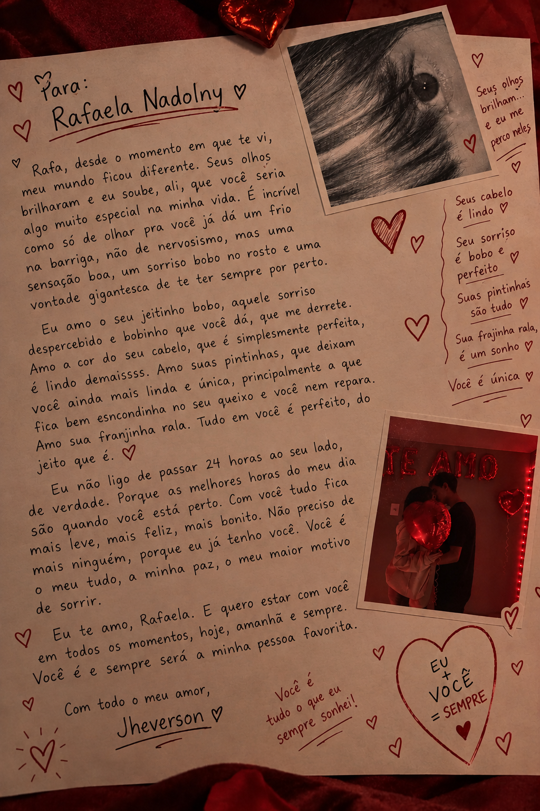

Para Rafaela, com todo o meu amor
Cinco meses desde que a nossa história começou, e eu ainda encontro novos motivos para te escolher todos os dias. Que esses sejam só os primeiros capítulos de tudo o que ainda vamos viver. Fiz uma coisinha para você, meu amor. ♡
Nossa história começou em 02 de maio de 2026 ♡
Algumas coisas ficam mais bonitas quando são escritas com amor.
♫ Die For You — use o controle abaixo para pausar ou continuar.

Com todo o meu amor, Jheverson ♡